Add service works. If you already know PMM.
Findings from two passes over the Add service flow: a review of all nine service types, then an adversarial pass that tried to break both the live flow and the proposed redesign. Every finding below was checked against the code, the API or the live server.
Decisions made
No.
The redesign drops Test connection. PMM keeps checking the connection when you add the service, and failures show inline instead of as a toast.
Now, in the current page.
Region and AZ, the MongoDB key password and the MySQL table statistics default get fixed in the Grafana add-instance code, as separate tickets.
No.
The feature-build screenshots stand. Where main differs, the finding says so.
Fix now in the current page
Three bugs lose data or change monitoring without telling anyone. Each is a small fix in public/app/percona/add-instance and needs no API change.
Region and Availability Zone never reach the server for self-hosted services
The form sends region and az at the top level of the request. AddMySQLServiceParams has no such fields, and the gateway discards unknown fields (DiscardUnknown: true). Fix: send them inside add_node, whose AddNodeParams already has region and az.
Confirmed from the captured request and the code. AddRemoteInstance.service.tsx:170-175.
The MongoDB TLS key password is never sent
The form field is tls_certificate_file_password, but the API expects tls_certificate_key_file_password. toPayload doesn't rename it, so a password-protected key can't work. Fix: map the field to the API name.
Found in code: MongodbTLSCertificate.tsx:17, mongodb.proto:67. Not reproduced live.
Table statistics are off by default, unlike pmm-admin
The form preselects "Disabled", which sends -1, and the server reads -1 as "never collect". The server and pmm-admin default to a 1,000-table limit. Fix: preselect "Default", or confirm the UI default is intentional.
AdditionalOptions.tsx:162, agent_model.go:978-979, mysql.go:42-48.
Findings
Ordered by impact on getting a first service monitored. The IDs match the full review: F from the first pass, N from the adversarial pass.
High impact
Every server error is a raw toast that disappears
Connection failures, wrong passwords and duplicate names show the backend's text, such as pq: password authentication failed … (28P01). The toast clears after about 10 seconds. No field is marked, and nothing says which agent tried to connect or what to do next. The form also reports one error per submit: a duplicate name hides a bad host until the next try.
Errors below the fold are silent
With one invalid custom label, pressing Add service at the top of the page changes nothing visible. The error renders at y = 1216 px in a 900 px viewport. The page doesn't scroll to it or summarise it.
Back, Cancel and reload throw away the form
Browser Back then Forward returns an empty form. Cancel on step 2 goes back to the type picker with no confirmation. A reload clears everything.
Region and AZ are silently dropped
See Fix now.
The flow never explains remote vs. agent-based monitoring
All eight cards say "Add a remote instance". Nothing says that pmm-admin add on the database host gives OS metrics and slow-log QAN. The Nodes and Agents selects default to pmm-server, list bare names and raw agent IDs, and don't say what they change: the node only matters for a localhost hostname and for push or pull metrics mode.
No connection test before submitting
Accepted: a dry-run API is out of scope. The redesign makes up for it by keeping the add call's errors on the page, next to the field that caused them.
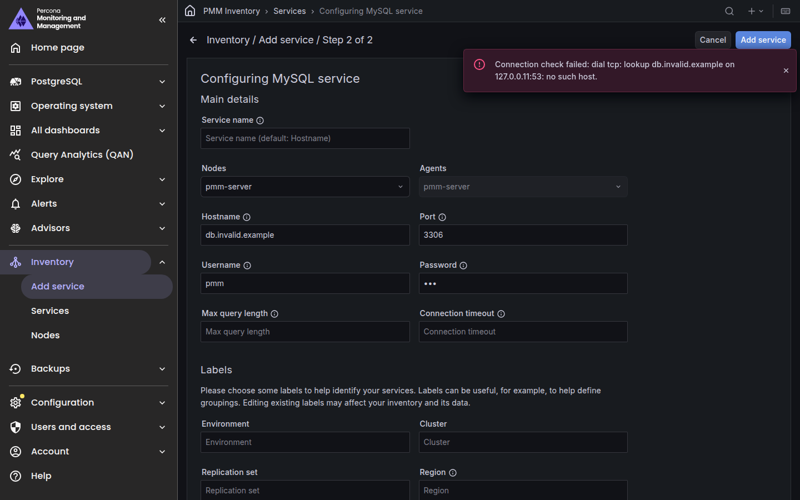

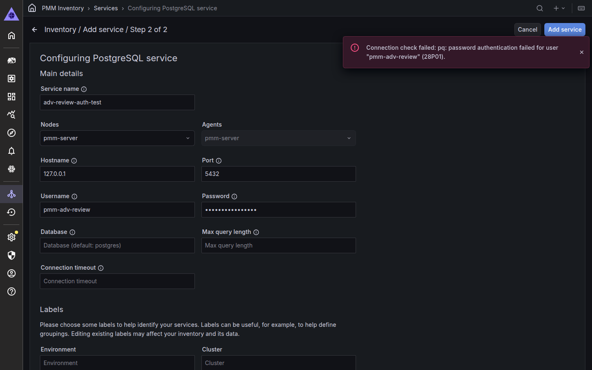
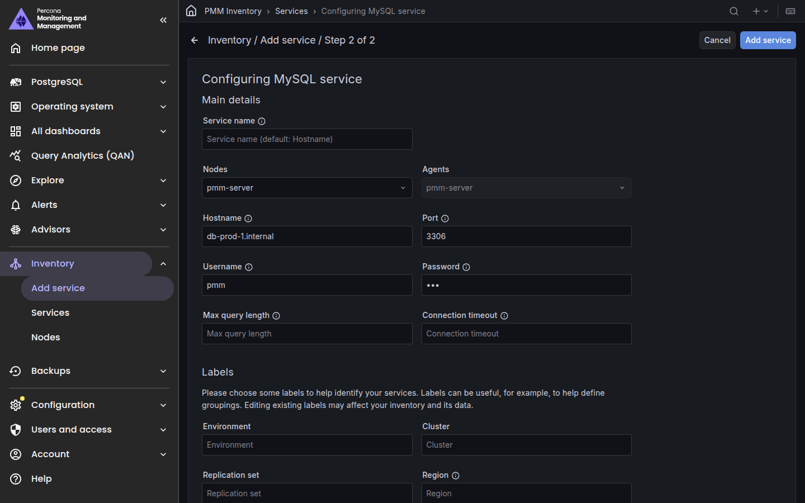
Medium impact
Hostname is in an error state before you touch it
MySQL, PostgreSQL, MongoDB, Valkey and ProxySQL open with "Required field" under Hostname. The node selector prefills address through form.change, which marks it modified.
The primary action is above a 2,000 px form
Add service lives only in the top toolbar. After the last field, Tab leaves the page; the button is about 30 tab stops back. Toolbar, breadcrumb and side nav each name the page differently.
Labels take more room than the connection
Five label fields and a key:value textarea come before any QAN option. Environment is free text with no suggestions, so prod and production drift apart.
"Additional options" is one flat list with double negatives
TLS, QAN, privacy and performance share a checkbox column. "Disable comments parsing" is checked by default. "Skip TLS verification" shows with TLS off. TLS certificates are three bare textareas with no upload.
Three-way toggles expose sentinel values
Table statistics shows Disabled / Default / Custom next to a greyed -1, and MySQL's default turns statistics off for good. PostgreSQL auto-discovery and connection limits use the same pattern.
MongoDB TLS key password is dropped
See Fix now.
Server warnings never reach the user
When pg_stat_monitor is missing, the server falls back to pg_stat_statements and returns a warning. The UI ignores the response, so the user believes pg_stat_monitor is in use.
Narrow screens clip the form
At 400 px the form is 778 px wide in a 344 px frame, and Cancel and Add service move into a ⋮ menu. At 768 px the navigation drawer opens over the form.
Validation is thin and leaks internals
http://db prod:3306/ passes as a hostname. "abc" as max query length yields "Value should be greater or equal to -1". "5 minutes" as a timeout yields "Invalid duration" with no format.
Technologies differ, partly by API design
HAProxy and External have no agent or timeout fields because their APIs don't. Other gaps are UI drift: MongoDB's service name has no tooltip, and max query length sits in a different place per type. On the captured build HAProxy's required port is empty; main prefills 8404.
RDS discovery has unclear states
On load it runs discovery with the server's identity behind an unlabelled spinner, then shows "No data" with no reason. Bad keys raise a toast that clears after 10 s and leaves only "No data". Discover sits in the toolbar, away from the fields.
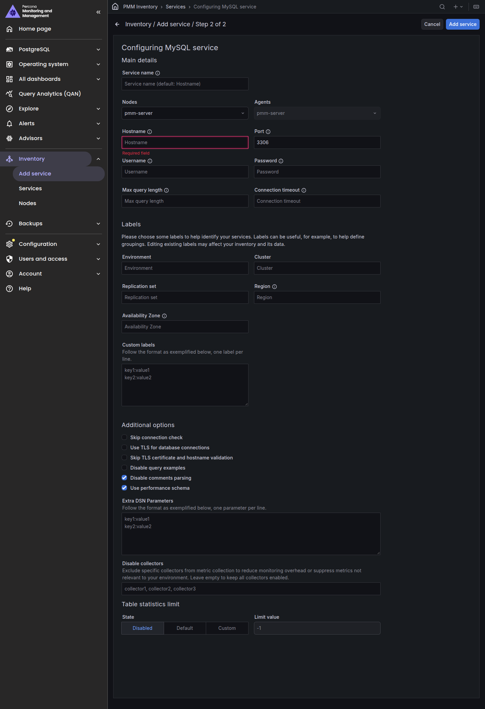
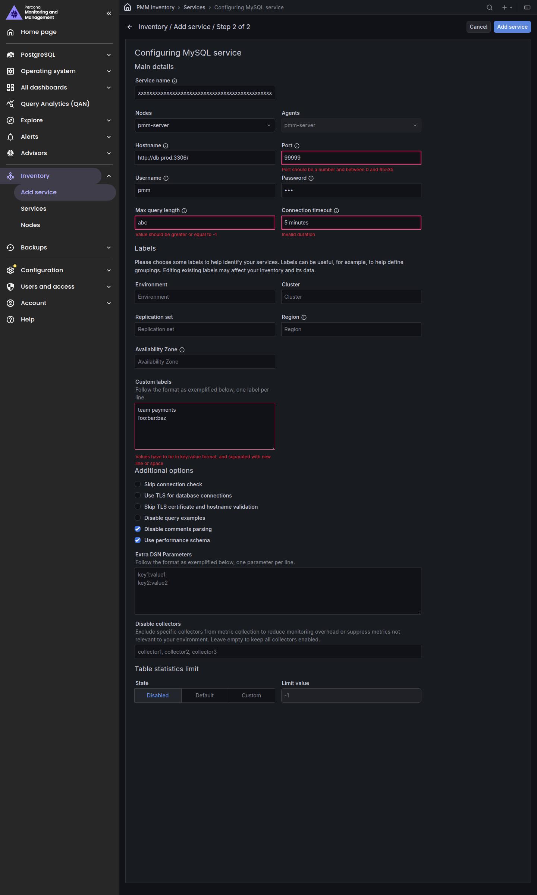


Lower impact
The type picker gives little to choose by
Identical subtitles, generic icons for RDS and External, no grouping or search. Azure disappears when turned off, yet /add-instance/azure still opens.
Copy repeats labels and hides units
Placeholders repeat labels. Only a tooltip mentions the 2s timeout default. The max query length tooltip reads "Full Example (Fingerprint) storage is not allowed by default to have the best performance".
Success is a toast and a redirect
No link to the new service's dashboard or QAN, and no sign that data is arriving.
Unknown types render a working-looking form
/add-instance/foo shows "Add remote instance" with Port (default: undefined ) and an active Add service.
Two accessibility misses
Error text is 3.83:1, below the 4.5:1 minimum, and headings jump from h1 to h3. Otherwise the axe-core scan was clean: every input is labelled and picker cards are real buttons.
Field matrix
What each form shows today. A marked cell is a decision to make during the migration.
| Field | MySQL | PostgreSQL | MongoDB | Valkey | ProxySQL | HAProxy | External |
|---|---|---|---|---|---|---|---|
| Connection | |||||||
| Service name | yes | yes | no tooltip | yes | yes | yes | yes |
| Node and agent | yes | yes | yes | yes | yes | not in API | not in API |
| Port | 3306 | 5432 | 27017 | 6379 | 6032 | empty on captured build | 443 |
| Username / password | required unless TLS | required unless TLS | required unless TLS | optional, unmarked | required | optional | optional |
| Database | – | yes | – | – | – | – | – |
| Connection timeout | yes | yes | yes | yes | yes | not in API | not in API |
| Max query length | main details | with database | main details | – | – | – | – |
| Scheme, metrics path, URL | – | – | – | – | – | – | yes |
| Security | |||||||
| TLS | CA, cert, key | CA, cert, key | PEM + password (dropped) | CA, cert, key | no cert fields | – | – |
| Skip TLS verification | yes | yes | yes | yes | yes | yes | yes |
| Query Analytics | |||||||
| QAN source | perf schema (on) | pgsm / pgss / off | profiler (off) | – | – | – | – |
| Query examples, comments | yes | yes | – | – | – | – | – |
| Collection tuning | |||||||
| Disable collectors | yes | yes | yes | – | yes | – | – |
| Extra DSN params | yes | – | – | – | – | – | – |
| Table statistics | default = never | – | – | – | – | – | – |
| Auto-discovery, max conn. | – | yes | – | – | – | – | – |
| Labels | |||||||
| Env, cluster, repl. set, custom | yes | yes | yes | yes | yes | yes | yes |
| Region, AZ | dropped | dropped | dropped | dropped | dropped | dropped | dropped |
Redesign
Mockups for the native PMM UI, built with @percona/peak-ui 1.0.26 and MUI 7 in the PMM theme. Everything shown works with today's API; Test connection is gone, per the decision above. They pass axe's WCAG A/AA checks except for two peak-ui issues listed under What we got wrong.
Choose what to monitor
- A callout says when to install PMM Client instead, with token-based commands as the docs recommend.
- Cards are grouped and searchable, and say what each collects.
- Azure stays visible when turned off, with a link to turn it on.

One form, four sections
- Connection first, including Connect from: the agent that runs the exporter, listed by node, version and status.
- Name and labels with Environment suggestions and labelled key/value rows.
- Query Analytics as a named choice with positive privacy switches.
- Advanced collapsed with a one-line summary. Region and AZ live here and go into
add_node. - A help panel with version-aware grants. Actions follow the form.
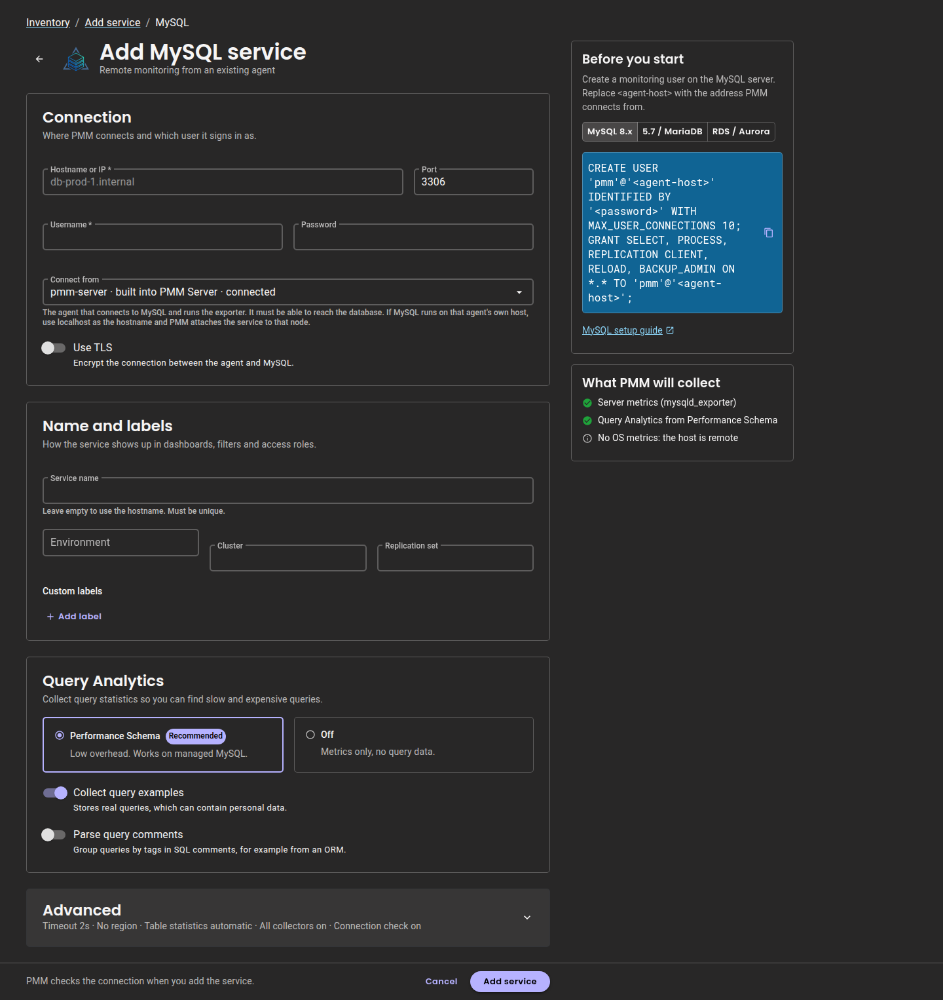
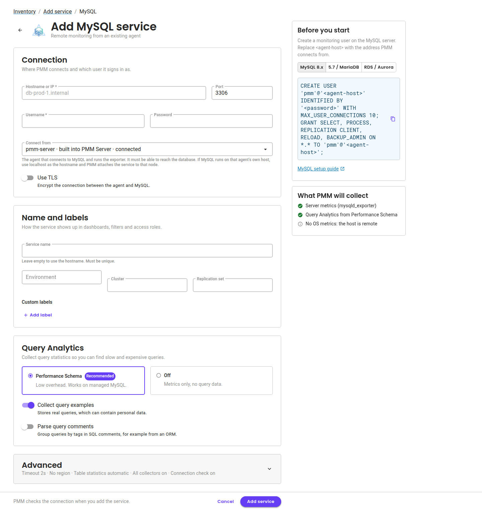
TLS and Advanced open
- Multi-line PEM fields with upload. Client certificate and key are optional.
- Units in adornments, and the real 2048 default for max query length.
- Table statistics as a named choice: automatic, custom limit, or never.
- A persistent "Skip the connection check" switch that says what skipping costs.
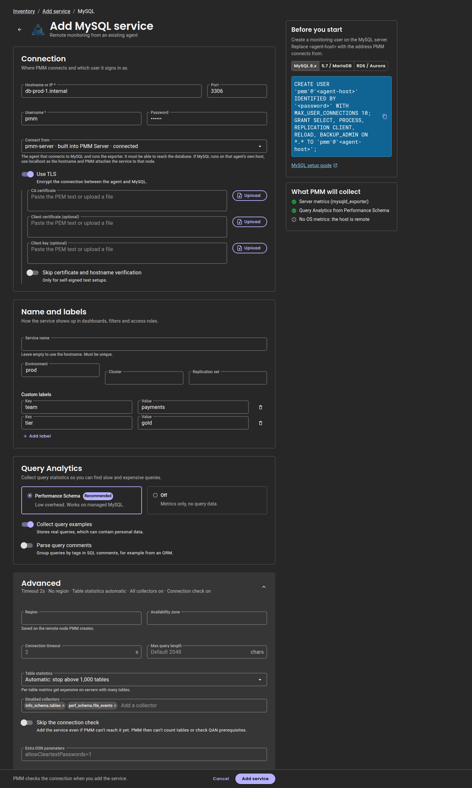
The add fails, and the page says why
- The add call's error stays on the page. It names host, port and agent, and points to Connect from.
- The field is marked and the footer lists what needs attention.
- Known driver messages (DNS, refused, timeout, 28P01, 1045) and
AlreadyExistsget plain wording. Anything else shows the raw text inline.
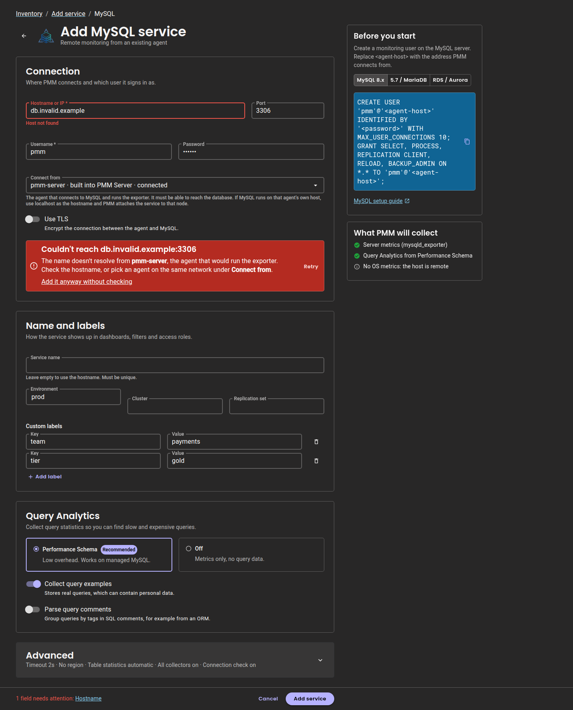
PostgreSQL choices
- QAN source as radio cards. pg_stat_monitor is recommended for self-hosted servers; RDS and Azure offer pg_stat_statements only.
- If pg_stat_monitor is missing, the server's fallback warning is shown after adding.
- Number fields appear only when their switch is on.
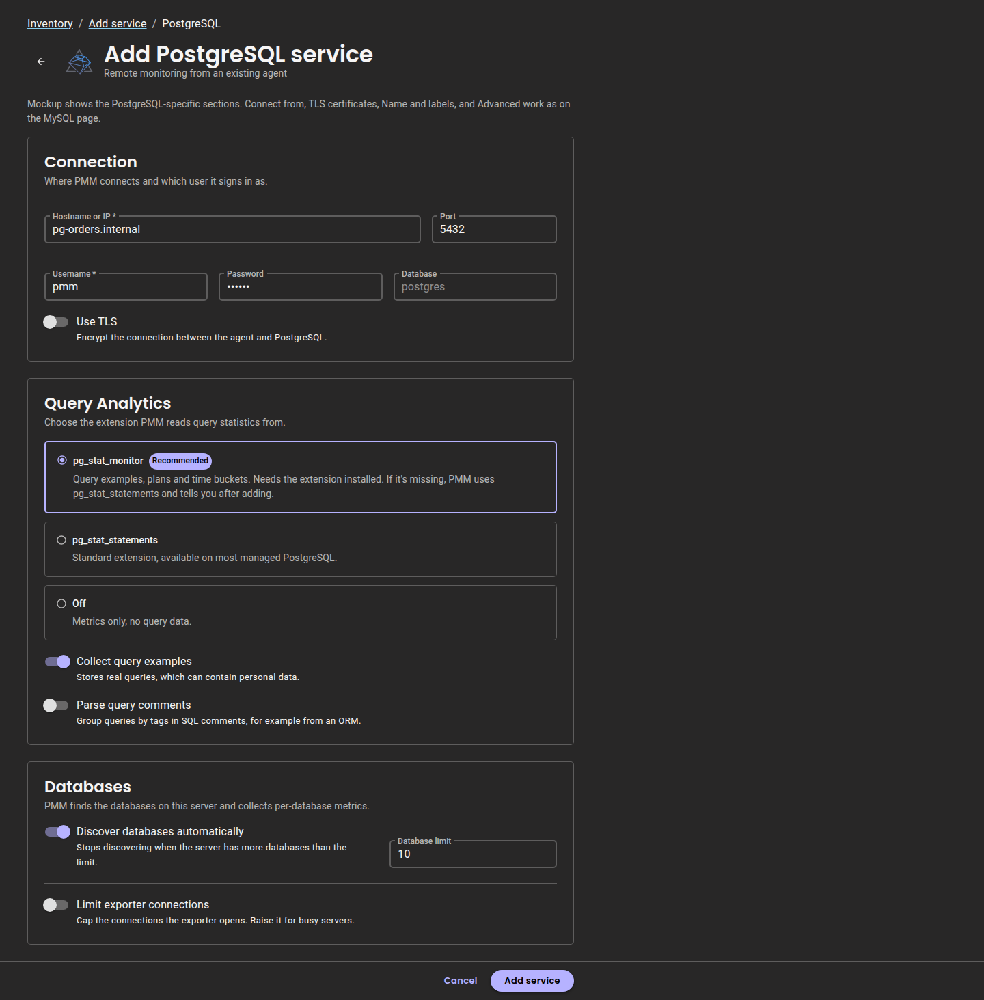
Amazon RDS and Aurora
- Three explicit ways to sign in, with Discover instances next to the credential.
- Results show which instances are already monitored, through a client-side join with inventory RDS nodes.
- Each row opens the same technology form, prefilled. One instance per add, as the API requires.
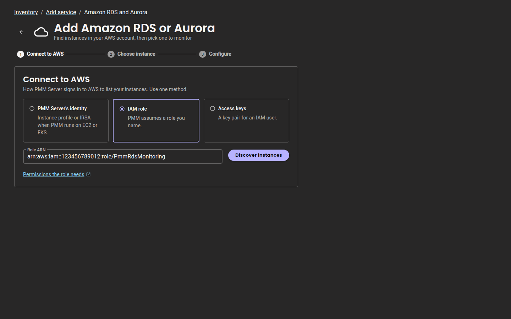

Added
- Confirms what was created and with which labels, and shows any server warning.
- Agent status comes from ListAgents.
- Links straight to the dashboard and QAN.

Plan
- Now, in the current page: the three silent data bugs under Fix now, as separate tickets.
- Data layer and route. API modules and TanStack Query hooks for management add, ListNodes, ListAgents, ListServices and RDS/Azure discovery. A takeover route for
/add-instance/:typethat falls back to Grafana for types not yet ported. - Form shell. Sections, footer actions after the form, help panel, driven by a per-technology config built from the field matrix.
react-hook-formwith a zod schema per type; defaults throughdefaultValuesso nothing is invalid on load. - Errors, warnings, focus. Server errors mapped to fields and kept on the page; response warnings shown; scroll to and focus the first invalid field.
- Don't lose work. Guard unsaved changes on Back, Cancel and route changes; Cancel leaves the flow.
- Port MySQL, PostgreSQL and MongoDB first, then Valkey, ProxySQL, HAProxy and External, then RDS and Azure.
- Picker and success page last. Keep
edit-instanceon the Grafana FormParts until it is ported, since it reusesLabels.
What we got wrong, and fixed
The adversarial pass turned on the review too. These are corrected above.
- The first redesign showed facts no API can supply today: a Test connection result, verified grants, detected extensions and "first metrics received". They are removed.
- The copy-paste grants only fit MySQL 8.x and used
'pmm'@'%'. They now switch between 8.x, 5.7/MariaDB and RDS and use the agent's host. - One merged agent select ignored what the node choice really does. It now explains the
localhostrule, and HAProxy and External keep a node select. - "Move Region and AZ to Advanced" was wrong for RDS and Azure, where region is required. They stay visible there.
- The first mockups failed more accessibility checks than the live UI and collapsed at phone width. Both are fixed.
- About ten factual slips in the first pass, such as "bad RDS keys show no error". They do, as a toast that expires.
- Upstream in peak-ui:
CodeCopyBlock's copy button has no accessible name. In the PMM theme, secondary text is 3.53:1 on white and error red 4.15:1 on dark cards. Both fail AA wherever PMM UI uses them.